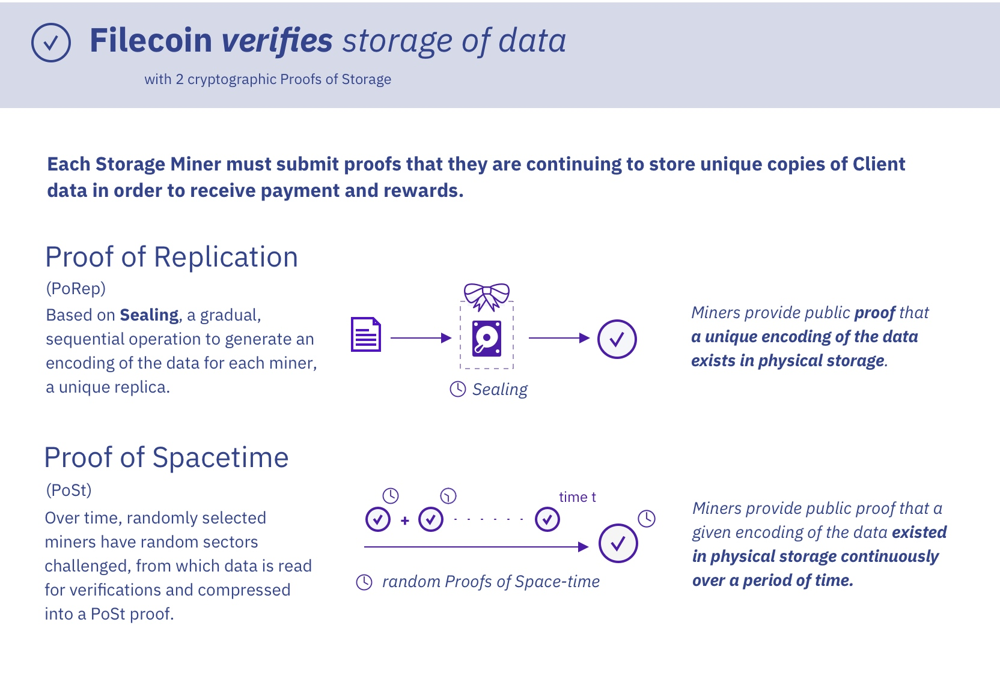

5.1 PoCom - Proof of Computation

Proof of Computation (PoCom) logs the game streaming QoS (quality of service) of each miner. Specifically, streaming and control logs of each miner VM are periodically sealed into IPFS sectors. IPFS sectors undergo the standard time-consuming FileCoin sealing process, which ensures immutability of the log data.
Figure 5 shows the PoRep and PoSt of FileCoin. In FileCoin’s PoRep, a sector is sealed (tamper-proof) by encoding the data iteratively, eventually obtaining a unique signature for each miner. ParaWare builds on top of PoRep by storing QoS related log files periodically into sealed sectors. This ensures that the log data stored at each particular timestamp is immutable and time-stamped.